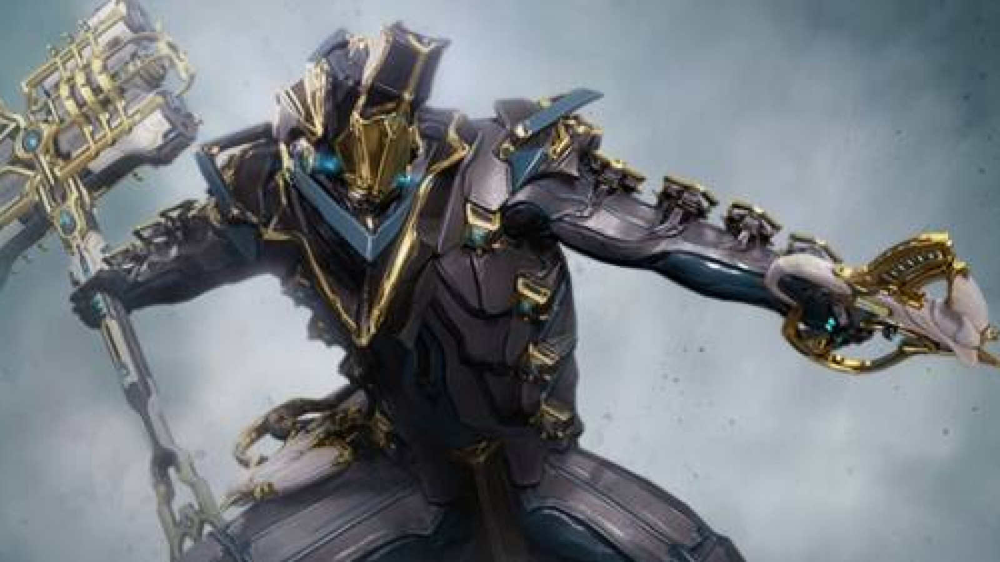

舊稿：玻璃面窗
先前誤將原版封閉面部改為寬玻璃，現已取消此方向。
ANDROMEDAE · ID 12 · C-13
新版將大玻璃面窗改成不透明鋼藍甲片，融合原版圓冠、分節中槽、青色 T／Y 線與 Vauban Prime 的封閉臉部分片。
概念、三視與拆解已同步，等你看效果。身甲方向延續；這批仍是建模概念圖。
先前誤將原版封閉面部改為寬玻璃，現已取消此方向。
與冠殼同色的淺分面，保留短下巴和耳部接座；青色是細光槽。
保留圓冠、中央分節槽、鋼藍封閉面部及青色細線。

借用封閉臉部與縱向分片，省略高冠、金飾與尖下巴。

生成會重繪局部紋理；面甲縫線、厚度與跨視尺寸仍需在建模時統一。尚未接入遊戲模型。